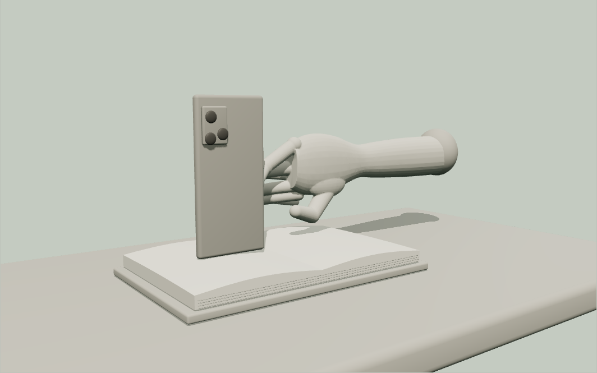

SPACE BEFORE SURFACE
先看形体，再谈笔触。
本阶段检查手指、手机与古书的体积和接触。全部使用灰色材质，尚未做原画贴合与最终美术。

完整构图 · 背壳视角真实网格与骨骼 / 非原画拉伸

02 / 本阶段怎么看
先确认这三个关系。
- 手机底部落在书页上，是否仍像悬空。
- 指腹是否贴着玻璃滑动，指节弯曲是否自然。
- 完整构图与近景是否只看见背壳，停顿时手与手机是否稳定。
袖口是定位代理。原画人物、绘画材质、完整房间分层和滚动转场尚未接入；这一页是灰模审阅，不是作品集最终页面。